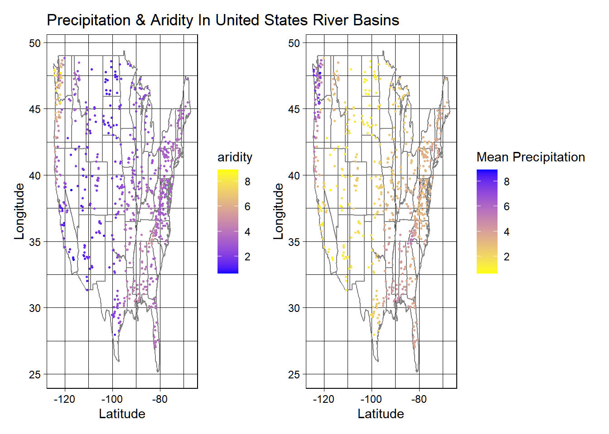
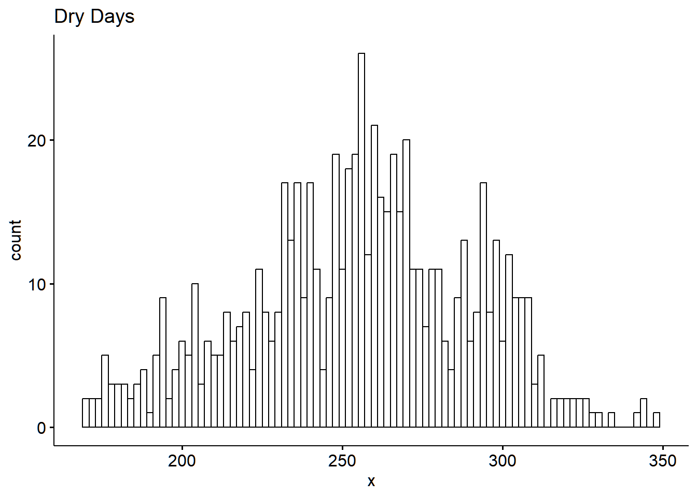
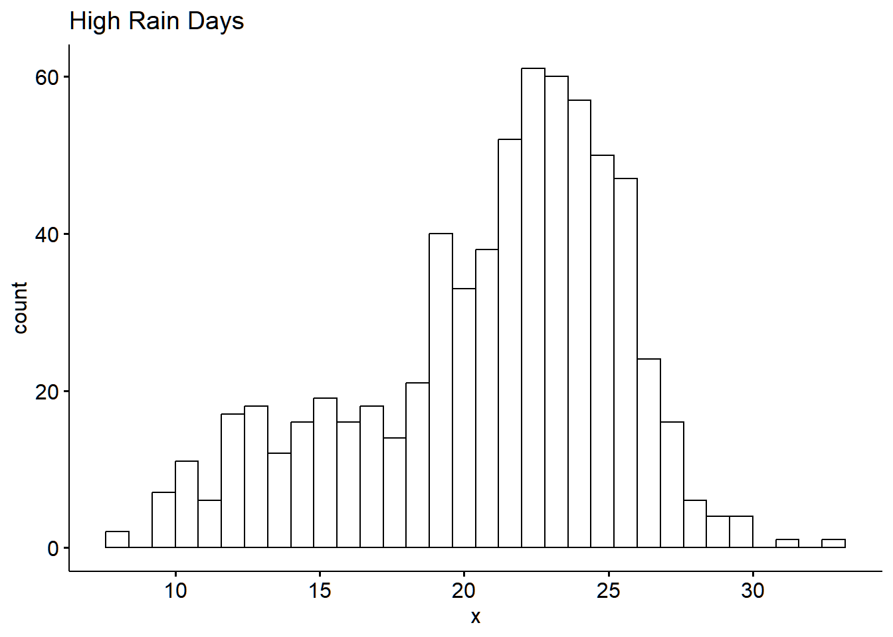
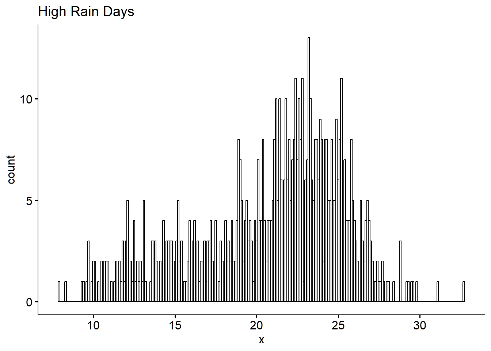
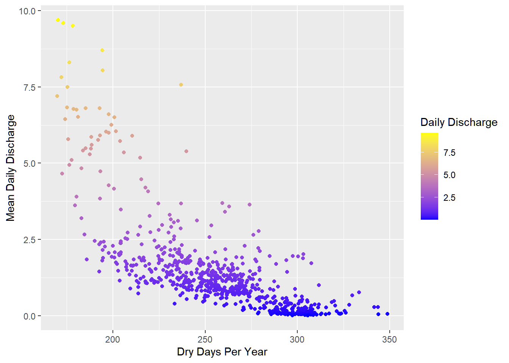
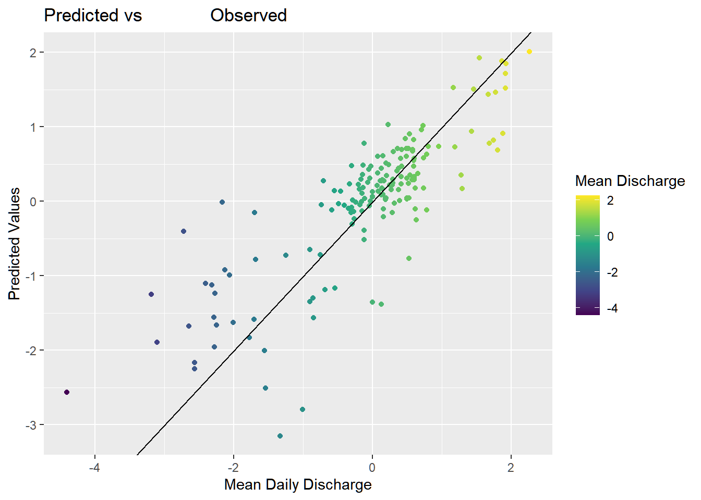

it appears as if zero q mean is meant to represent series of dates with 0 mean daily discharge
Question 2
Graph 1
#graph 1 camels_aridity <- camels |>arrange(-aridity)aridity_graph <-ggplot(data = camels, aes(x = gauge_lon, y = gauge_lat)) +borders("state", colour ="grey50") +geom_point(size =0.5,aes(color = p_mean)) +scale_color_gradient(low ="blue", high ="yellow") +theme_linedraw() +labs( title ="Precipitation & Aridity In United States River Basins", x ="Latitude", y ="Longitude", color ='aridity')# Color scale was determined measuring from low aridty which would imply a less dry environment compared to a high aridity environment which would imply a dry environment.
Graph 2
camels_aridity <- camels |>arrange(-aridity)pmean_graph <-ggplot(data = camels, aes(x = gauge_lon, y = gauge_lat)) +borders("state", colour ="grey50") +geom_point(size =0.5,aes(color = p_mean)) +scale_color_gradient(low ="yellow", high ="blue") +theme_linedraw() +labs( x ="Latitude", y ="Longitude", scale ="free", color ="Mean Precipitation ")
Graphs Combined
library(patchwork)
Warning: package 'patchwork' was built under R version 4.4.3
library(gridExtra)
Warning: package 'gridExtra' was built under R version 4.4.3
Attaching package: 'gridExtra'
The following object is masked from 'package:dplyr':
combine
aridity_graph + pmean_graph

Question 3
library(xgboost)
Warning: package 'xgboost' was built under R version 4.4.3
Attaching package: 'xgboost'
The following object is masked from 'package:dplyr':
slice
Overall, The xgboost models seem to work better, as they have a significantly lower standard error value then the nueral network models, they also rank higher in rsq values which tells us more of the variance in the model can be explained by the data.
Question 4
Choosing Data
# I'm going to select terms that mean daily discharge should have a significant relationship with and use correlation models to see which ones I could possibly model camels |>select(q_mean,slope_mean,slope_fdc, area_gages2,frac_snow,high_prec_freq,low_prec_freq)|>drop_na()|>cor()
#Strong Correlation is observed with days per year with precipitation 5x higher then mean daily precipitation as well as dry days per year. model will be built to determine if we can predict mean flow based on a certain number of dry days as well as high precipitation days per year. Possibly to help with further research on how climate change could impact river basin mean flow. camels <- camels |>mutate(log_high_freq =log(high_prec_freq))#Code to Visualize distribution of data low_prec_freq <- camels |>pull(low_prec_freq)high_prec_freq <- camels |>pull(high_prec_freq)log_prec_high <- camels |>mutate(log_high_prec =log(high_prec_freq))|>pull(log_high_prec)gghistogram(binwidth=2,low_prec_freq, main ="Dry Days")

#low_prec_freq data looks relativley normally distributed gghistogram(binwidth =0.8, high_prec_freq, main ="High Rain Days")

#high_prec_freq data is slightly left skewed, log makes this skew worse. We will use the non log version of our data for this model. gghistogram(binwidth =0.1, high_prec_freq, main ="High Rain Days")

High_flow_graph <- camels |>ggplot(aes(x = high_prec_freq, y = q_mean,color ="q_mean")) +geom_point(aes(color = q_mean)) +scale_color_gradient(low ="blue", high ="yellow") +labs(x ="High Precipitation Days Per year",y ="Mean Daily Discharge",col ="Daily Discharge")Low_flow_graph <- camels |>ggplot(aes(x = low_prec_freq, y = q_mean, color ="q_mean")) +geom_point(aes(color = q_mean)) +scale_color_gradient(low ='blue', high ='yellow') +labs(x ="Dry Days Per Year",y ="Mean Daily Discharge",col ="Daily Discharge")Low_flow_graph
Warning: Removed 1 row containing missing values or values outside the scale range
(`geom_point()`).

High_flow_graph
Warning: Removed 1 row containing missing values or values outside the scale range
(`geom_point()`).
Regression & Recipe making
#Linear regression will be used to determine if the dry days and high precipitation days data both have a significant relationship with q_mean. If so we will use both if not we will use the one that does for our modellinear_model =lm(LogQmean ~ high_prec_freq + low_prec_freq, data = camels)summary(linear_model)
Call:
lm(formula = LogQmean ~ high_prec_freq + low_prec_freq, data = camels)
Residuals:
Min 1Q Median 3Q Max
-3.9132 -0.3929 0.0574 0.4442 2.4467
Coefficients:
Estimate Std. Error t value Pr(>|t|)
(Intercept) 6.848565 0.232702 29.431 < 2e-16 ***
high_prec_freq 0.051133 0.012874 3.972 7.91e-05 ***
low_prec_freq -0.031513 0.001666 -18.910 < 2e-16 ***
---
Signif. codes: 0 '***' 0.001 '**' 0.01 '*' 0.05 '.' 0.1 ' ' 1
Residual standard error: 0.742 on 667 degrees of freedom
(1 observation deleted due to missingness)
Multiple R-squared: 0.6022, Adjusted R-squared: 0.601
F-statistic: 504.9 on 2 and 667 DF, p-value: < 2.2e-16
#It appears both have a p value less than 0.05 suggesting that this data has a significant relationship, we will use the data but we will need to try some stuff to get a higher r squared value in our final model. set.seed(123)camels_split <-initial_split(camels, prop =0.75)camels_train <-training(camels_split)camels_test <-testing(camels_split)camels_fold <-vfold_cv(camels_train, v =10)rec <-recipe(LogQmean ~ high_prec_freq + low_prec_freq, data = camels_train)|>step_BoxCox(all_predictors()) |>step_center(high_prec_freq)|>#These steps should help raise the r squared valuestep_naomit(all_predictors(),all_outcomes())baked_data =prep(rec)|>bake(new_data =NULL)#The formula used for this was mainly centered around the desire to remove the left skew I had in my predictor values data, primarily in high_prec_freq. Because of this, I used BoxCox which helps to make data have a more normal dsitrubtion as well as center which should also help with thissummary(lm(LogQmean ~ high_prec_freq + low_prec_freq, data = baked_data))
Call:
lm(formula = LogQmean ~ high_prec_freq + low_prec_freq, data = baked_data)
Residuals:
Min 1Q Median 3Q Max
-3.9315 -0.3829 0.0725 0.4368 2.2228
Coefficients:
Estimate Std. Error t value Pr(>|t|)
(Intercept) 5.2534744 0.3511128 14.962 <2e-16 ***
high_prec_freq 0.0006937 0.0004553 1.524 0.128
low_prec_freq -0.0040027 0.0002604 -15.370 <2e-16 ***
---
Signif. codes: 0 '***' 0.001 '**' 0.01 '*' 0.05 '.' 0.1 ' ' 1
Residual standard error: 0.7604 on 499 degrees of freedom
Multiple R-squared: 0.5949, Adjusted R-squared: 0.5932
F-statistic: 366.3 on 2 and 499 DF, p-value: < 2.2e-16
#r squared is around 59% which isn't great but it will be servicable for our models
#Our results show that our models haven't been very succesful at showing a relationship and may not be the best as predictors, the best model to use is our rand_forest model so we will use this one and evaluate later.
# A tibble: 3 × 3
.metric .estimator .estimate
<chr> <chr> <dbl>
1 rmse standard 0.636
2 rsq standard 0.682
3 mae standard 0.451
obs_pred <-ggplot(pred_graph, aes(x = LogQmean, y =.pred, color = LogQmean))+scale_color_viridis_c() +geom_point()+labs( x ="Mean Daily Discharge", y ="Predicted Values",color ="Mean Discharge", title ="Predicted vs Observed ") +geom_abline()obs_pred

Overall, our predicted values aligned with our observed values where the majority of the data was centralized which tells me that our values at the beginning and near the end of the graph were outliers from the data, . I believe the r squared value would have increased and a better model would have been made if outliers were eliminated at the beginning of the model creation by filtering out values greater then a certain value, or replacing them with the mean value of the datset. . Overall, this was my first model that I’ve made and I feel like I have a better understanding about how model building works and I look forward to getting better at it as time goes on and better understanding the different models I can use. This lab was fun!